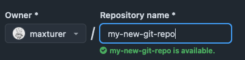
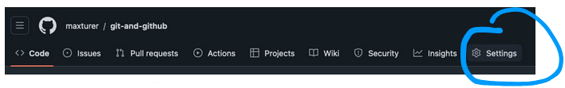
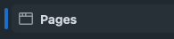
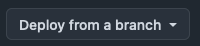

Head to GitHub, and look at a list of your repositories (if you have a new account, it's likely blank)
Click on the green button that says New on the top right.
You’ll be brought to the “New Repository page” to name and create your remote repository. I already called mine “my-new-git-repo” on my local computer, so I'll do the same here:

Once you submit and create, you have a GitHub repo! There are a lot of instructions here, but let’s focus on just a few.
To connect our repository ( /Users/[yourname]/my-new-git-repo ) with this new GitHub repository ( https://github.com/[your-username]/my-new-git-repo ), we can add the GitHub repository to ours as a remote.
In your terminal in your git repository directory, add the GitHub version as a remote called origin:
git remote add origin https://github.com/[yourusername]/my-new-git-repo.git
Let’s try to add, or push, our changes to GitHub with git push.
Did it work? No, Git didn't like that. You should see an error that says:
"fatal: The current branch main has no upstream branch."
Intimidating, but fine. You can connect the changes you've made with GitHub by telling git that what you're working on right now on your computer is the same as a GitHub branch. It doesn't know yet.
Here's a command to tell it to connect your work to the remote called origin on a branch called main:
git push -u origin main
Now, head back to your GitHub repository ( https://github.com/[your-username]/my-new-git-repo ) and refresh the page. Your hello.txt file is now on GitHub!
Forking an existing GitHub repository means making a copy and keeping it for yourself. It’s a bit like saving a zip file to your Downloads folder, but in Git language. Practice forking this one:
https://github.com/maxturer/git-and-github
Once you’re there, click on the Fork button on the top right, then Create a new fork.
Name it what you want, and keep “copy the main branch only” checked.
GitHub will bring you to your new fork, or a version of this repository that you own now.
To edit your new forked repository on your computer, find the <> Code button on the top right. Copy the URL you see (HTTPS should be underlined)
Return to your terminal, and open a new window.
Clone your new fork using git clone:
git clone https://github.com/[your-username]/git-and-github
That should make a new repository/folder on your computer called git-and-github (or whatever you named your fork). To enter the repository, then open it in Visual Studio Code, enter the following two commands:
cd git-and-github
code .
The repository you copied is a GitHub Pages site (this one!), GitHub's useful tool for publishing your repository on the internet. You can access it in your browser here.
On the example site, you should see a big heading that says: Hi, Who are you?!.
Using Git, let's change that in your fork to say your name.
In Visual Studio Code, look for a text file called YOUR_NAME_HERE.txt.
Click to open it, and replace the line that says Who are you? with your own name. Save with Cmd + S (or Ctrl + S on Windows), and try adding your change to GitHub with git add YOUR_NAME_HERE.txt, committing with git commit -m "[message]", and pushing to your fork with git push.
Your change is now active on your forked GitHub repository!
If you'd like to see this on the web, you can launch your GitHub repository as a GitHub Pages site of your own. This is a really useful way to easily launch your own website once you know how to use Git.
To do this, go to your forked repository’s settings.

From there, select  on the left sidebar. Name your site, select the  option to update the site every time you push to GitHub, and save. Wait a few minutes for GitHub to work on it.
You did it!
Check out your GitHub pages site with your new committed & pushed edit: https://[your-username].github.io/git-and-github